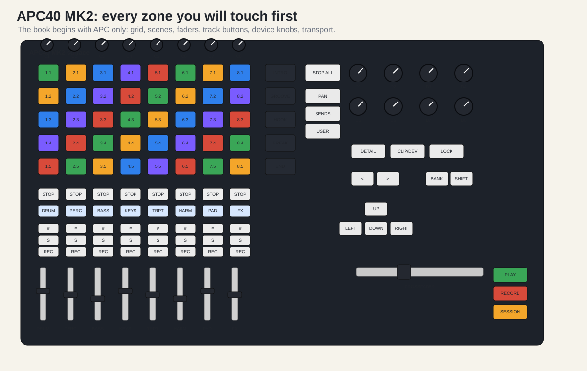

The APC40 MK2 is not a keyboard. It is not primarily for playing melodies. It is a physical control surface for Ableton Live’s Session View and mixer. Ableton’s controller page describes the core idea: a 5 by 8 RGB clip-launching grid, nine faders, eight channel control knobs, and eight device control knobs. The Akai manual explains the same surface in operational terms: the eight columns are tracks, the five rows are scenes, and the buttons at the right launch entire scenes.
That gives you the whole mental model:
| Physical APC zone | Ableton job | First-day meaning |
|---|---|---|
| 8 by 5 clip grid | Session View clip slots | Start one loop on one track. |
| 5 scene buttons | Session rows | Start a whole musical section. |
| Clip Stop buttons | Track stops | Stop the currently playing clip in a column. |
| Track selectors | Track focus | Choose the track whose device you want to control. |
| Track activators | Mute/unmute | Create dropouts without touching the mouse. |
| Solo buttons | Isolate a track | Diagnose problems, not a normal performance move. |
| Record-arm buttons | Prepare tracks for recording | Useful later; not central to APC-only playback. |
| Track faders | Mixer volumes | Make the set feel alive. |
| Channel knobs | Pan, sends, or user mappings | Use Pan and Sends first; avoid User at first. |
| Device knobs | Current device parameters | Control macros, filters, delays, and racks. |
| Crossfader | A/B blend | Performance transitions. |
| Play, Record, Session | Transport and recording | Start Live, capture the performance. |

For the first day, do not manually MIDI-map anything until the native APC script works. The APC40 MK2 is designed to correspond to Ableton Live automatically. Manual mapping is powerful, but it can hide whether the native script is working.
Use this order: